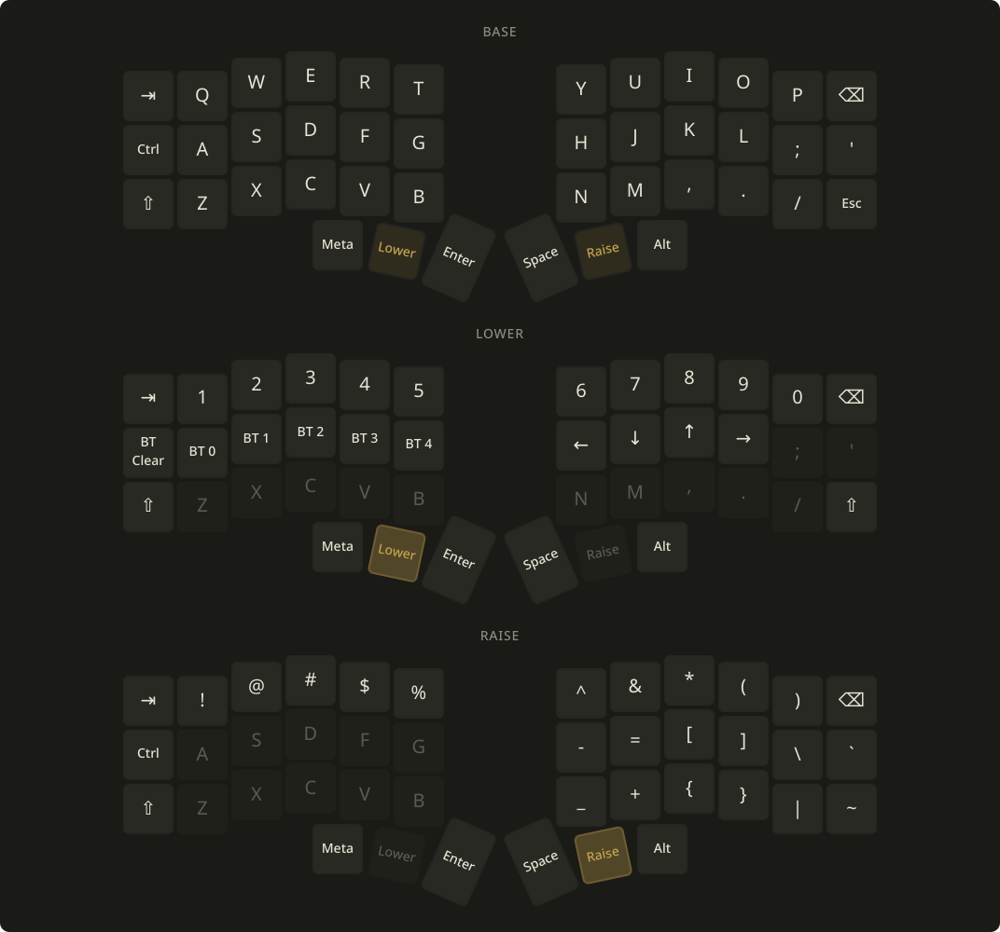

A KDE Plasma widget that shows the keymap on your ZMK keyboard.
github.com/nirokato/plasma-zmk-keymap

Reads the keymap straight off the keyboard over ZMK Studio's USB connection, so the cheatsheet always matches the firmware. No zmk-config repo or keymap-drawer run to keep in sync.
Every layer is a tile on the board's real physical layout, arranged in whichever grid gives the biggest keys for the widget's shape, in your Plasma color scheme. The keymap is cached, so the widget keeps working with the keyboard unplugged.
python3CONFIG_ZMK_STUDIO=y and the studio-rpc-usb-uart snippet&studio_unlockuucp or dialout groupRight-click the desktop and choose Add Widgets… › Get New… › Install Widget From Local File…, add ZMK Keymap, plug the keyboard in over USB, and click Read from Keyboard.
Setup details and troubleshooting are in the README.
Built for my own desk and shared as-is: no issues, no pull requests, no roadmap. Fork it and make it yours under the MIT license; keep the copyright notice, and a link back is appreciated.